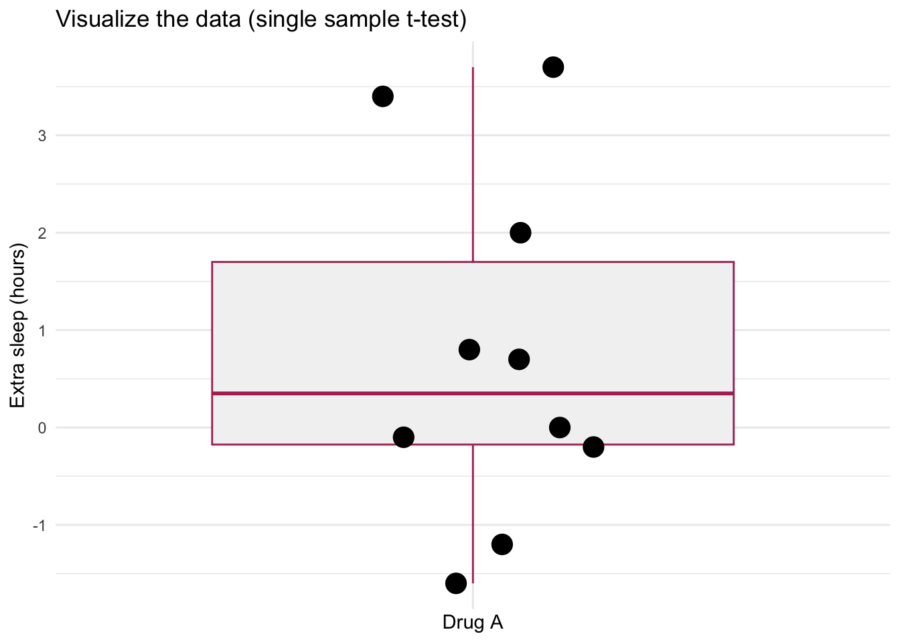
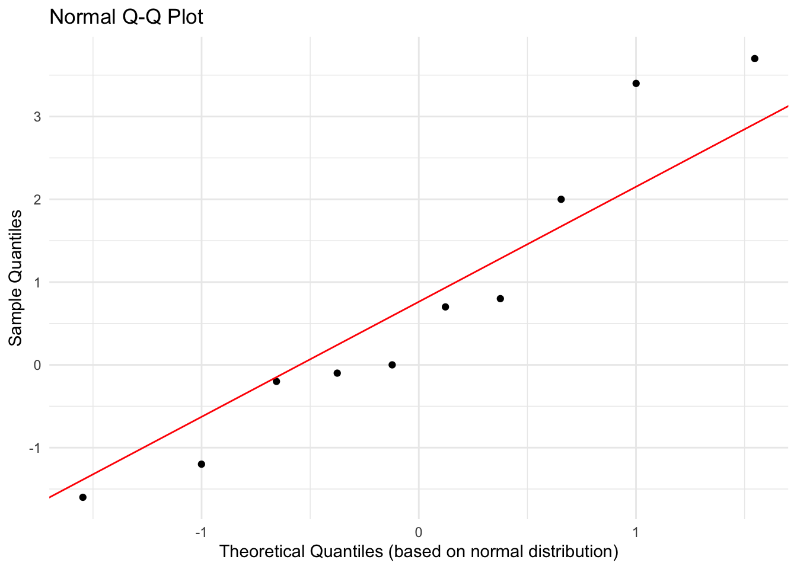

16 Fri Oct 16 - Linear model for a single categorical predictor (factor)
16.1 Finish the last two subsections in the last lecture
MLE of linear model coefficients and LRT and reporting and interpretting the analysis (see notes from the previous day)
Some additional notes: Quinn and Keough discuss Model II regression, which is when there is variability in measuring both \(X\) and \(Y\) and when we have a question where it is not clear which is the predictor and which is the response variable (6.1.7, i.e., brain and body weight in mammals). This is Ch 9.3 from Dr. Schneider’s notes. We will skip this because it has not been covered in BIOL 4605/7220 in previous years.
16.2 Linear model for a single categorical predictor (factor)
First, consider the difference between regression (continuous predictor) and ANOVA (categorical predictor). See here.
General linear models with categorical predictors can be called t-test (two levels (or groups) of the predictor) or ANOVA (3 or more levels or groups). Quinn and Keough had given the example of the effect of Isoflurane and Alpha chloralose on blood CO2 levels in mice in previous chapters (i.e., see Box 2.2 on p13-14) and Ch 6.2 of Quinn and Keough jumps right in to ANOVA, while Ch 10 from Dr. Schneider’s notes starts with t-test. For the linear model with the single categorical predictor, we will begin with a single sample t-test from Dr. Schneider’s notes.
16.2.1 Single sample t-test
These notes follow Ch 10.1.
The research question was whether Drug A (L-hyoscyamine) results in extra sleep relative to no drug, in 10 subjects. Cushny AR, Peebles AR (1905). The action of optical isomers. II. Hyoscines. J Physiology 32:501-510.
The data are:
require(dplyr)
sleep.data = read.csv("https://raw.githubusercontent.com/ahurford/biol-4605-data/refs/heads/main/data/extrasleep.csv")%>%filter(drug=="A")
sleep.data## drug extra.sleep person
## 1 A 0.7 1
## 2 A -1.6 2
## 3 A -0.2 3
## 4 A -1.2 4
## 5 A -0.1 5
## 6 A 3.4 6
## 7 A 3.7 7
## 8 A 0.8 8
## 9 A 0.0 9
## 10 A 2.0 10Note, that I loaded dplyr to filter the data because these data actually report extra sleep for drugs A and B, but this example from Dr. Schneider’s notes is only for Drug A. Note also that this is extra sleep which involves the mean value for the person’s normal sleep (no drug) being subtracted from the mean sleep when the person is taking drug A. As such, negative numbers mean that the person got less sleep, on average, when they were taking the drug.
16.2.1.1 Construct the model
State our verbal hypothesis: People who take Drug A get more or less sleep.
Graph the data:
library(ggplot2)
ggplot(sleep.data, aes(x = factor(drug), y = extra.sleep)) +
# 1. Add the box plot layer
geom_boxplot(
outlier.shape = NA, # CRITICAL: Prevents duplicate plotting of outliers
fill = "grey95", # Light fill to keep it as a background summary
color = "maroon" # Muted border color
) +
# 2. Add the strip plot (jittered points) layer
geom_jitter(
position = position_jitter(width = 0.2, height = 0), # Controls data spreading
color = "black", # Pick a distinct color for raw data points
size = 5, # Modify point size
) +
labs(
x = "Drug A",
y = "Extra sleep (hours)",
title = "Visualize the data (single sample t-test)"
) +
theme_minimal()+
theme(axis.text.x = element_blank())
This plot shows that the median extra sleep is \(>0\), but not by a lot (small effect size) and also that there is a lot of variation between individuals such that the interquartile range overlaps with 0 (no extra sleep). There are also few observations. As part of our exploratory analysis we should also evaluate if the observations are symmetric around the median (i.e., to evaluate the assumption of normality).
Formal model:
\[ S = \beta_A + \epsilon \]
where \(S\) is extra sleep (hours) and \(\beta_A\) (hours) is the mean extra sleep for the people who took drug A. This is different notation that Dr. Schneider’s notes, but I choose it to be more intuitive. The variable \(\epsilon\) denotes the errors and is \(N(0,\sigma^2)\).
The null hypothesis is that \(\beta_A = 0\).
16.2.1.2 Execute the analysis
Calculate the mean extra sleep.
## [1] 0.75(the data frame extra.sleep has 3 columns so I need to specify that I want to take the mean of the extra sleep column which is why $ is there. Alternatively, I could have used select() from dplyr).
We have estimated \(\hat{\beta}=0.75\) hours.
##
## One Sample t-test
##
## data: sleep.data$extra.sleep
## t = 1.3257, df = 9, p-value = 0.2176
## alternative hypothesis: true mean is not equal to 0
## 95 percent confidence interval:
## -0.5297804 2.0297804
## sample estimates:
## mean of x
## 0.75The p-value and the 95\(\%\) confidence interval (overlapping 0) suggest that we cannot reject the null hypothesis that drug A does not change the amount of sleep a person gets.
Dr. Schneider evaluates the model assumptions during this step, rather than exploratory analysis as presented in Quinn and Keough. This can be done with a qqplot.
# Create the Q-Q plot
ggplot(sleep.data, aes(sample = extra.sleep)) +
stat_qq() +
stat_qq_line(color = "red") +
labs(title = "Normal Q-Q Plot", x = "Theoretical Quantiles (based on normal distribution)", y = "Sample Quantiles") +
theme_minimal()
This will work in place of Dr. Schneider’s plot of “Probability” versus “observations in rank order”. The plot suggests that our assumption that the response variable is normally distributed is reasonable.
Many of the other assumptions of linear models are not applicable in this example of a one sample t-test. Independence of errors is pretty difficult to assess without more information on the study (the lagged residuals plot).
We would like to partition the df and SS according to the model. Because we fit the model with t.test() rather than lm() we will need to calculate the SS ourselves.
epsilon = (sleep.data$extra.sleep - mean(sleep.data$extra.sleep))
epsilon2 = epsilon^2
SS.res = sum(epsilon2)
total = c("Total", "NA", sum(sleep.data$extra.sleep), round(sum(epsilon),6), SS.res)
sleep.data2 = data.frame(sleep.data, epsilon = epsilon, epsilon2 = epsilon2)
sleep.data2 = rbind(sleep.data2, total)
sleep.data2## drug extra.sleep person epsilon epsilon2
## 1 A 0.7 1 -0.05 0.0025
## 2 A -1.6 2 -2.35 5.5225
## 3 A -0.2 3 -0.95 0.9025
## 4 A -1.2 4 -1.95 3.8025
## 5 A -0.1 5 -0.85 0.7225
## 6 A 3.4 6 2.65 7.0225
## 7 A 3.7 7 2.95 8.7025
## 8 A 0.8 8 0.05 0.0025
## 9 A 0 9 -0.75 0.5625
## 10 A 2 10 1.25 1.5625
## 11 Total NA 7.5 0 28.805## [1] 28.805SS total we can calculate relative to our null hypothesis that drug A does not change the mean number of hours slept.
epsilon.total = sleep.data$extra.sleep - 0
epsilon.total.2 = epsilon.total^2
SS.total = sum(epsilon.total.2)
SS.total## [1] 34.43The calculation of the p-value (0.21) from our t-statistic (1.33) needed to evaluate the df (stated as 9). Here the calculation to partition the df is shown:
\[ \begin{array}{lllll} \mbox{GLM} & S & = & \beta_A & + \ \ \epsilon \\ \mbox{df} & 10 & = & 1 & + \ \ 9 \\ \mbox{SS} & 34.43 & = & 5.62 & + \ \ 28.81 \\ \end{array} \]
The likelihood ratio is calculated as \(LR = (SS_{res}/SS_{total})^{-n/2} = (28.81/34.43)^{-10/2} = 2.4\). The observed difference (0.75 hours extra sleep) is only 2.4 times more likely than no extra sleep. This is inadequate evidence.
16.3 Report the biological conclusion
The sample size is just 10 people. A power analysis suggests that we could have detected an increase of 1.29 hours slept. A bigger sample size would have helped us detect an effect. Our analysis did not suggest any change in sleep due to drug A. Additionally, given that the population is intended to be all people, it is unlikely that 10 people is a representative sample of the population. Furthermore, due to known differences in sex and other physical and socio-economic determinants of health, it would be advisable to consider some of these variables in the experimental design and analysis.
16.4 Readings
- Ch 6.2 Quinn and Keough (dives right into ANOVA)
- Ch 10.1 from Dr. Schneider’s notes (one sample t-test).